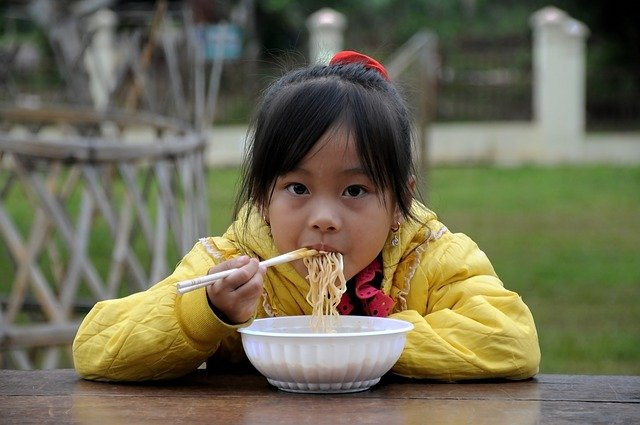

Ramen Noodles
Ingredients
- Ramen Noodle packet
- pot
- egg

Directions
- Heat like 5 cups of water in the pot to boiling
- Open the Ramen pack a put in only the noodels, set the foil flavor pack aside for later
- Wait about 3 minutes
- Remove from heat and drain most of the water off
- Open and stir in foil flavor packet
- Crack egg into soup while the water is still hot enough to cook it
- Stir a little bit
- Wait until cool and eat, perferably with chop sticks directly from the pan